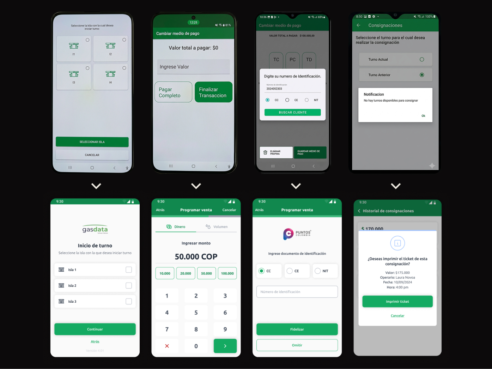
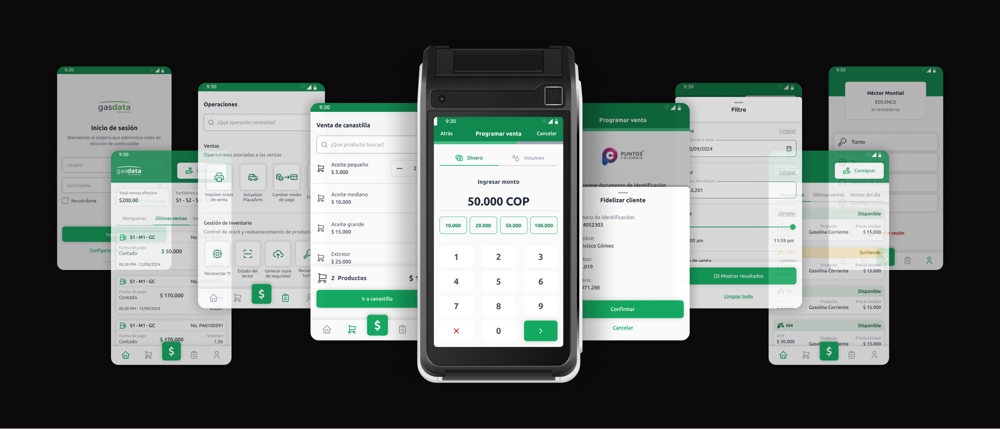
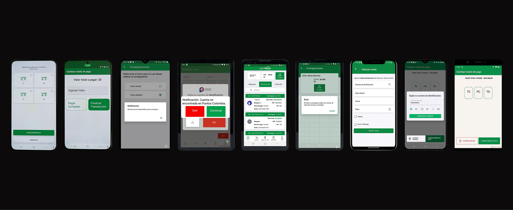
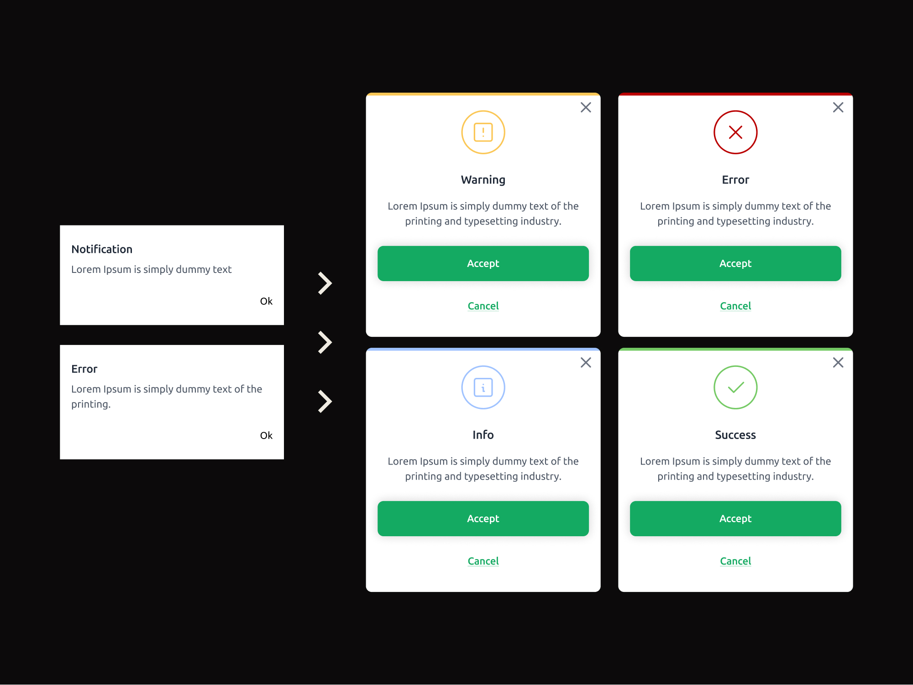
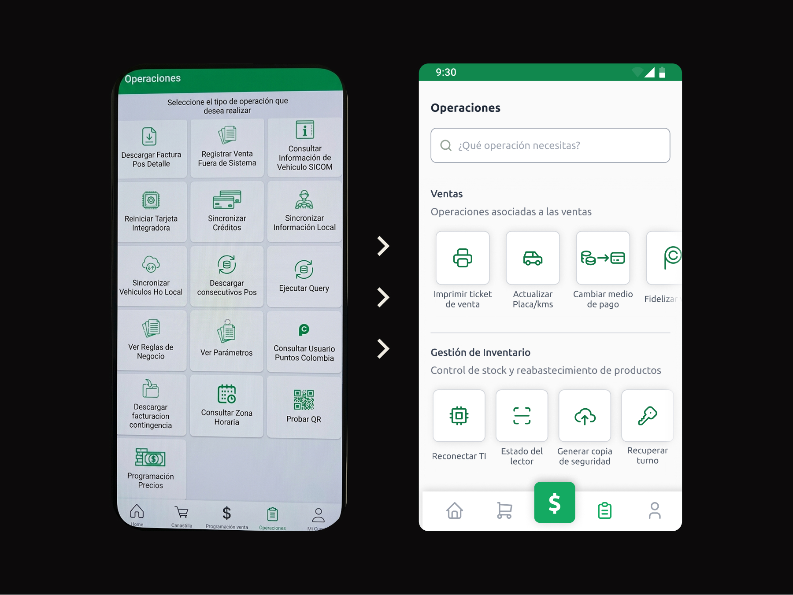

A
Usability under constraints
The interface was optimized for small screens and challenging usage conditions. Touch targets, spacing, and input fields were redesigned to ensure accessibility and ease of use.


This project focused on redesigning a mobile application used by gas station attendants in Colombia to manage sales, payments, and operational tasks.
The app runs on dataphones — devices with limited performance and small screens — and is used in fast-paced environments where efficiency and clarity are essential. Users rely on this tool throughout their daily workflow, often under challenging conditions such as direct sunlight, time pressure, and limited familiarity with digital interfaces.
The interface introduced friction instead of supporting efficient workflows
“I’m not used to new technology, so I need something simple and easy to use.”
— Gas station attendant
Buttons and inputs were too small, making interactions difficult and error-prone on limited devices.
The interface lacked proper contrast, making it hard to read under direct sunlight conditions.
Users struggled to understand system responses due to unclear states and lack of feedback.
Tasks and operations were poorly structured, increasing cognitive effort and slowing down workflows.

The initial analysis focused on understanding how the product was used in real conditions, revealing critical usability issues in interaction, visibility, and feedback.
The product operated on low-performance dataphones with small screens, used by users with limited digital familiarity.
Before redesigning the interface, it was necessary to create a new design system. Core components such as inputs, buttons, navigation elements, and layout structures were redefined to ensure consistency, usability, and scalability across the product.
The redesign focused on simplifying interactions, improving visibility, and reducing cognitive effort.
Interface elements were redesigned and refined through multiple iterations to ensure clarity, efficiency, and usability in real conditions.
The interface was optimized for small screens and challenging usage conditions. Touch targets, spacing, and input fields were redesigned to ensure accessibility and ease of use.

The system lacked clear feedback, making interactions uncertain. Visual states and modals were redesigned to clearly communicate actions, errors, and system responses.

Navigation and task organization were restructured to reduce cognitive load. Operations were grouped and prioritized, improving scanability and efficiency.

The redesign resulted in a more usable and efficient experience, adapted to real-world conditions and user capabilities. By prioritizing clarity and functionality, the product became easier to understand, faster to use, and more reliable in daily operations.
Designing for real-world conditions requires prioritizing clarity, simplicity, and performance over visual complexity.
This project taught me to focus on functionality over aesthetics, making design decisions based on context, user capabilities, and real usage scenarios rather than visual preference.